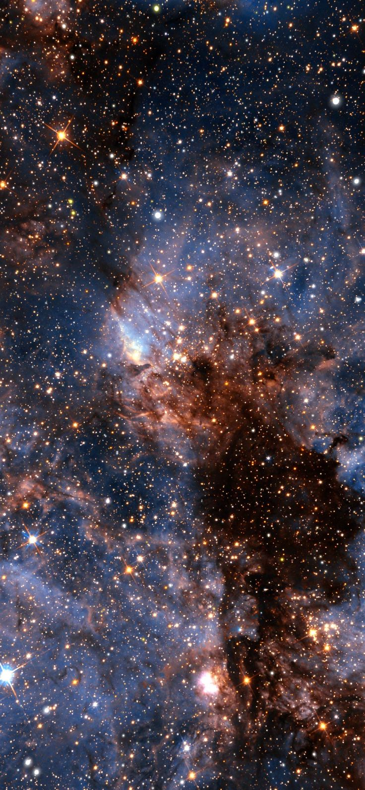
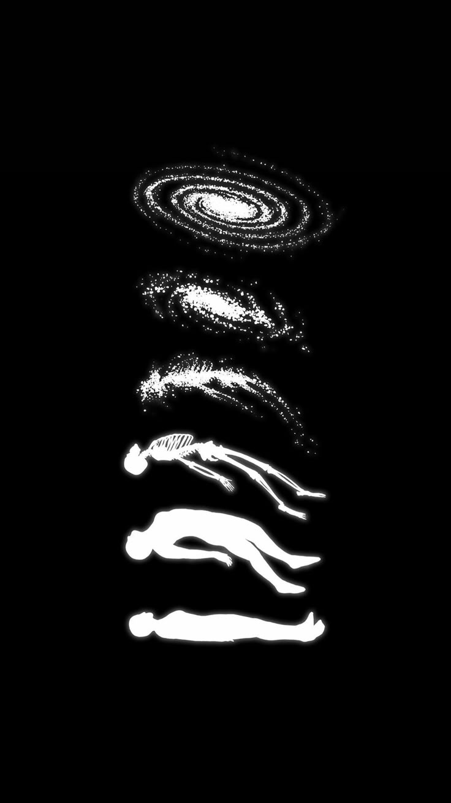

TON 618 é um buraco negro supermassivo, localizado na constelação de Canes Venatici, próximo ao Polo Norte Galáctico. É o buraco negro mais massivo já encontrado, com uma massa 66 bilhões de vezes maior que a do Sol. Localização Está a cerca de 10,4 bilhões de anos-luz da Terra Fica na fronteira entre as constelações Cães de Caça e Cabeleira de Berenice Características É um quasar muito luminoso, alimentado por sua gigantesca massa Sua energia emitida por seu disco de acreção é equivalente ao brilho de trilhões de estrelas É tão brilhante que pode ser observado por telescópios Observação Foi detectado pela primeira vez em uma pesquisa de 1957 do Observatório Tonantzintla, no México, mas não perceberam o que era Impacto na evolução de galáxias A observação de TON 618 e sua enorme nebulosa forneceu informações sobre os processos que impulsionam a evolução de galáxias massivas
 